Vier, über die zu reden ist
Die drei Entwürfe der ersten Abstimmung — Arena ist der Favorit, Matrix die zweite Wahl — und Rotstift, der als einziger von ihnen bereits geschnitten ist: dieselbe Gestaltung, ein Drittel des Textes. Daran lässt sich die offene Frage entscheiden, wie viel Information wirklich auf der Seite sein muss.
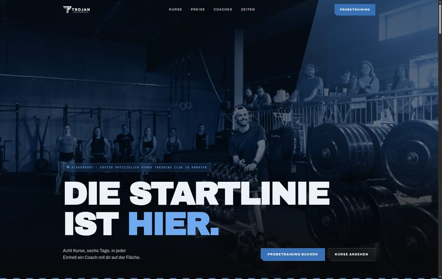
Arena
Dunkel und filmisch. Erst das Kursangebot und der Wochenplan, dann führt eine Vollbild-Bühne zum Preis. Coaches und Zeiten schließen ab. Ungeschnitten, auf ausdrücklichen Wunsch.
Ansehen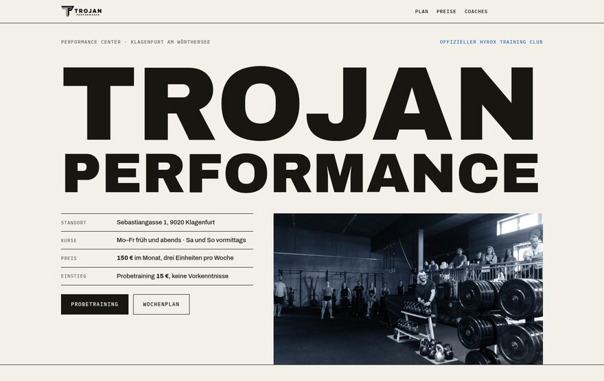
Rotstift
Papier und genau eine Farbe: das offizielle Blau der Livesite. Der Stift kreist im Preisblock den Einstiegstarif ein, der Wochenplan steht als volles Raster über die ganze Woche. Von 1060 auf 407 Wörter.
Ansehen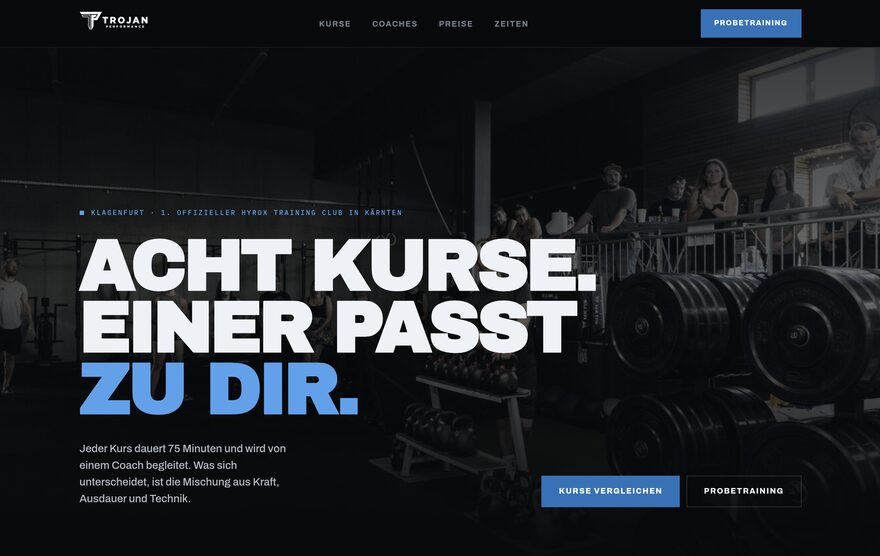
Matrix
Dunkel und sachlich. Das Kursangebot steht nicht als Liste da, sondern als Diagramm: Kraft gegen Ausdauer, der Ring zeigt den Technikanteil. Darunter der Wochenplan aus dem Buchungssystem.
Ansehen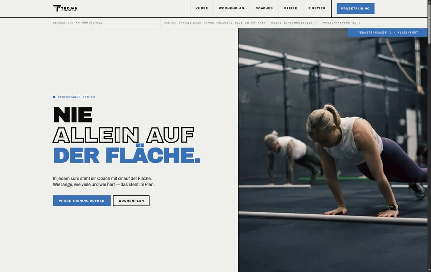
Phalanx
Hell, plakativ, wie ein gedrucktes Plakat. In der Mitte steht der Wochenplan als Aushang — die Frage „passt das in meine Woche?“ beantwortet sich früh.
AnsehenFünfzehn Zwischenstände
Aus sechs Runden, jede mit einer eigenen Zwangsbedingung — kein Foto, kein Scrollen, kein Farbwert, geblättert statt gescrollt. Sie stehen hier, weil sie zeigen, was geprüft und verworfen wurde, nicht weil eine davon die Seite werden soll. Kern ist die Ausnahme, die man ansehen sollte: Arena mit demselben Schnitt wie Rotstift, 790 auf 342 Wörter.
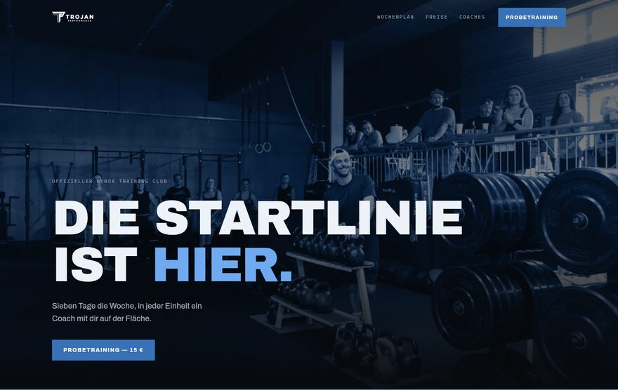
Stele
Arena ohne Inszenierung
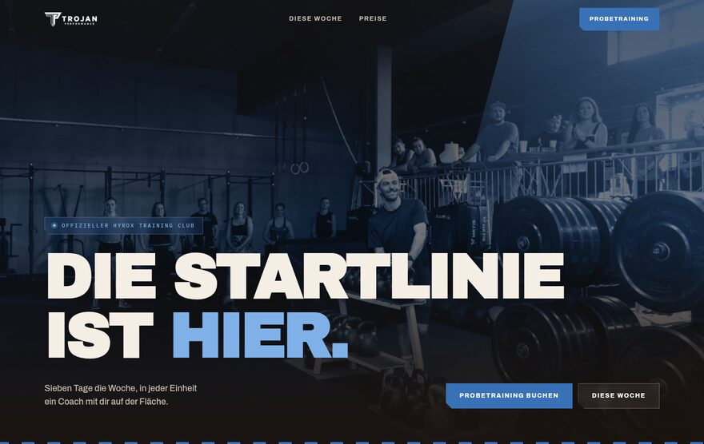
Umbra
Kern auf warmem Grund — reine Farbstudie
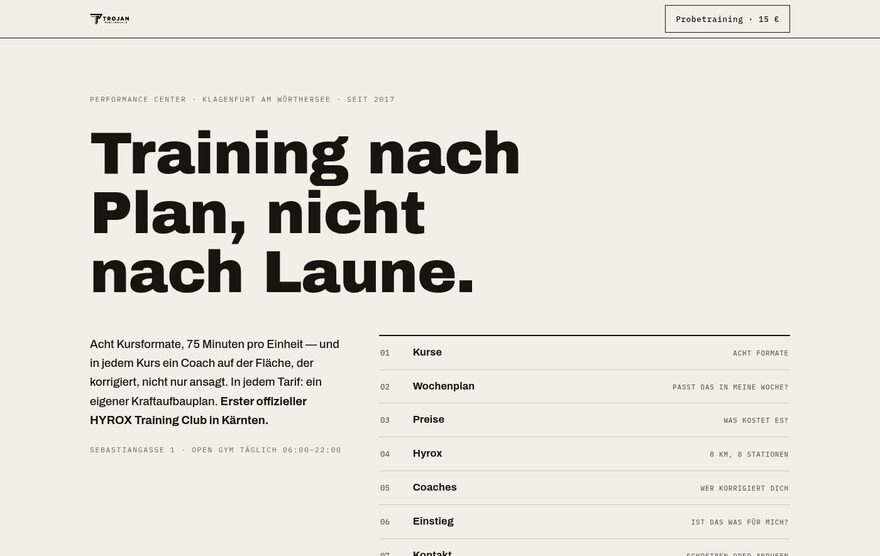
Logbuch
Papier und Ultramarin, Inhaltsverzeichnis statt Menü
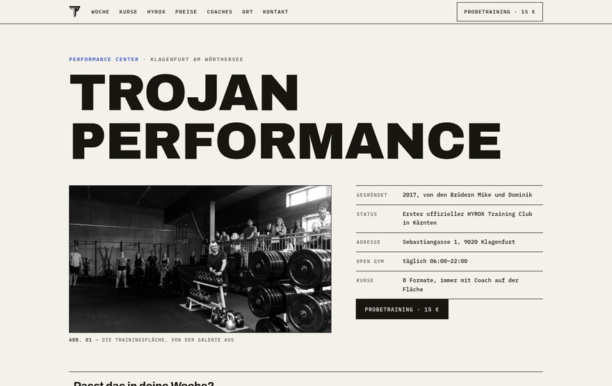
Protokoll
Trainingsprotokoll, Fotos als nummerierte Abbildungen
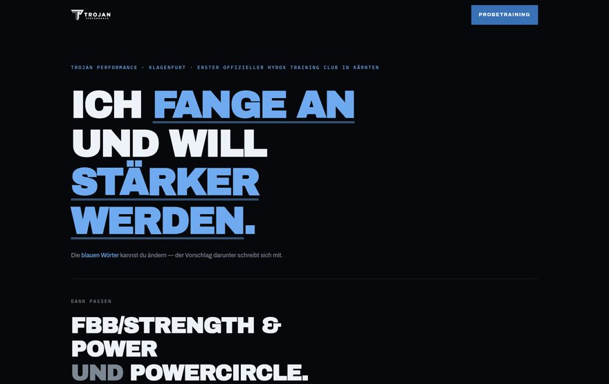
Satz
Ein Satz mit zwei änderbaren Wörtern steuert den Vorschlag
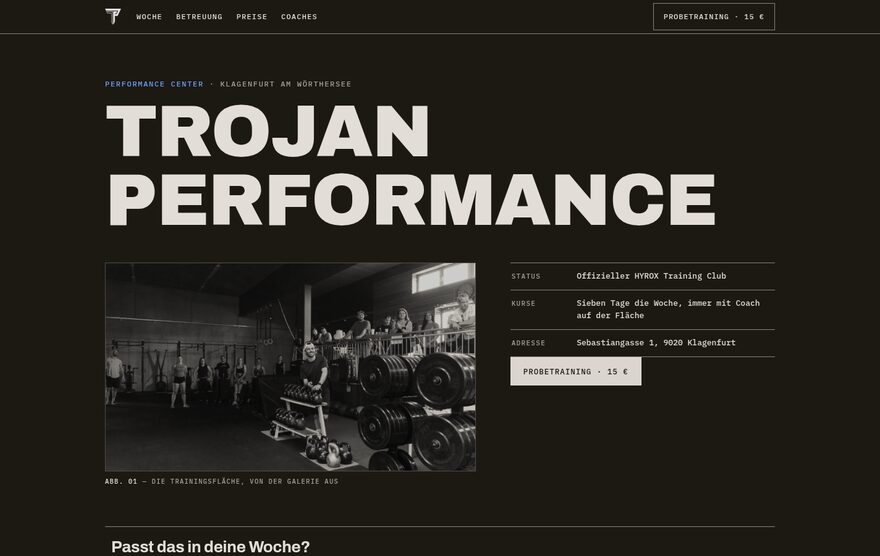
Nacht
Protokoll im Dunkeln, warmes Braunschwarz
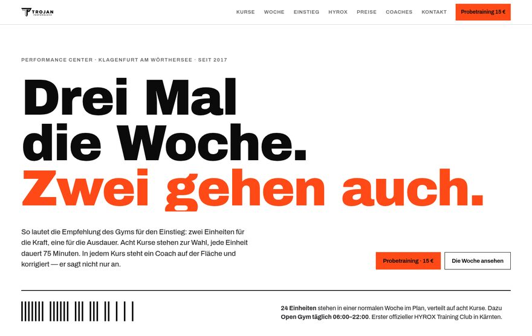
Schrift
Kein einziges Foto
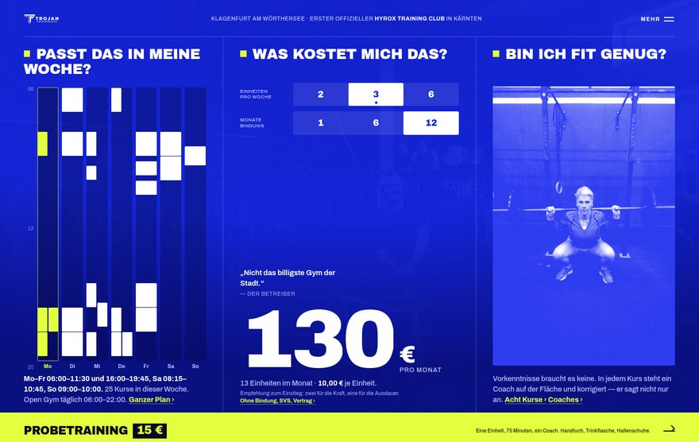
Schirm
Kein Scrollen — alles auf einem Bildschirm
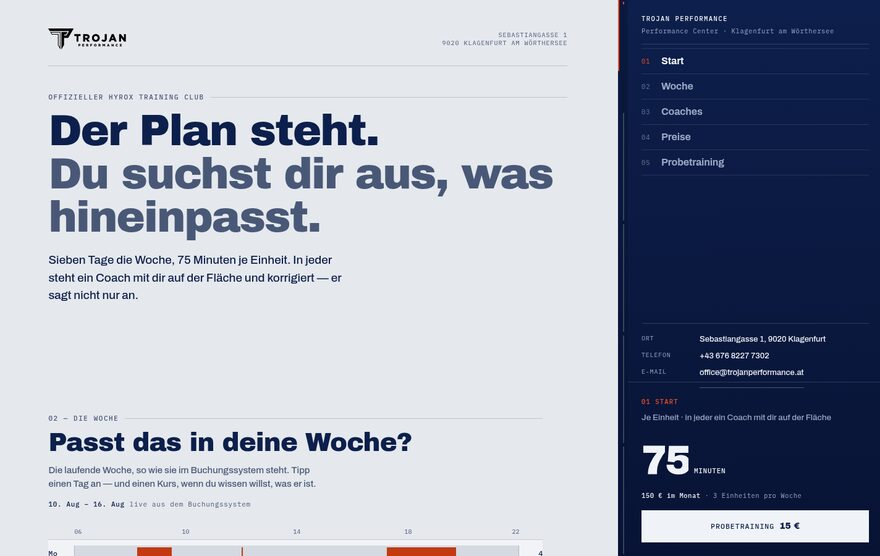
Spalte
Geteilt: eine Hälfte reagiert auf die andere
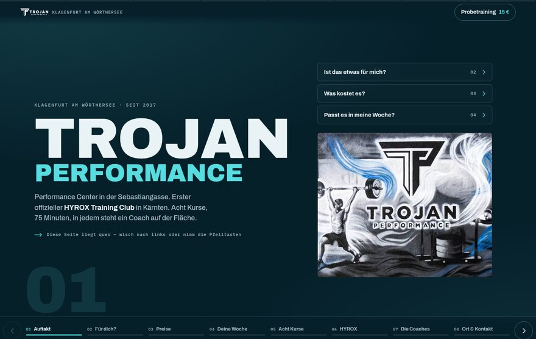
Quer
Wird geblättert, nicht gescrollt
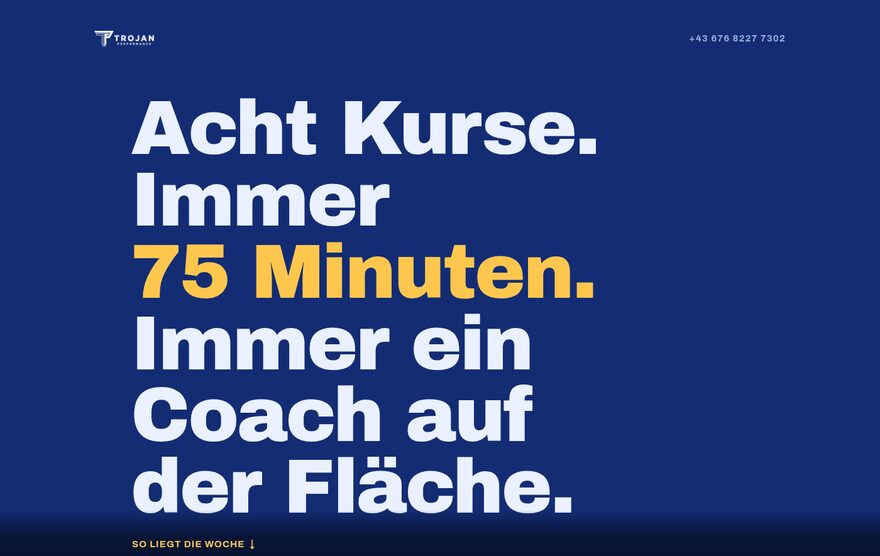
Fluss
Keine Abschnitte, keine Kästen, keine Listen
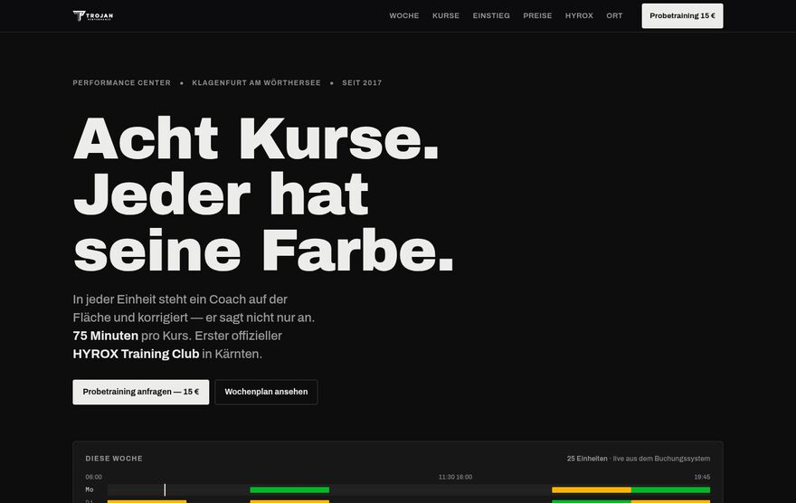
Spektrum
Die echten Kursfarben des Buchungssystems
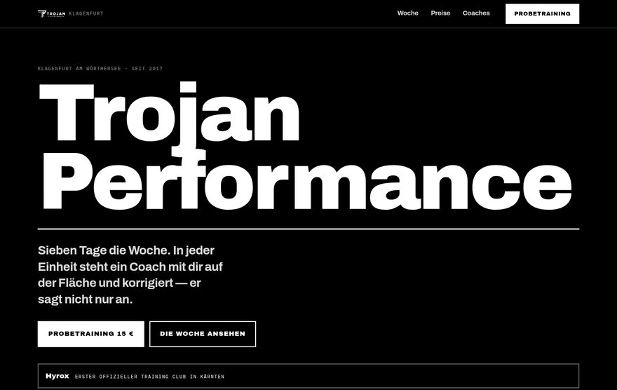
Grau
Kein einziger Farbwert auf der Seite
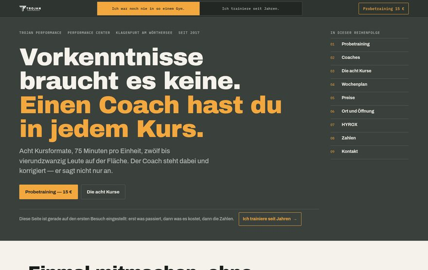
Wende
Zwei Fassungen in einer Seite
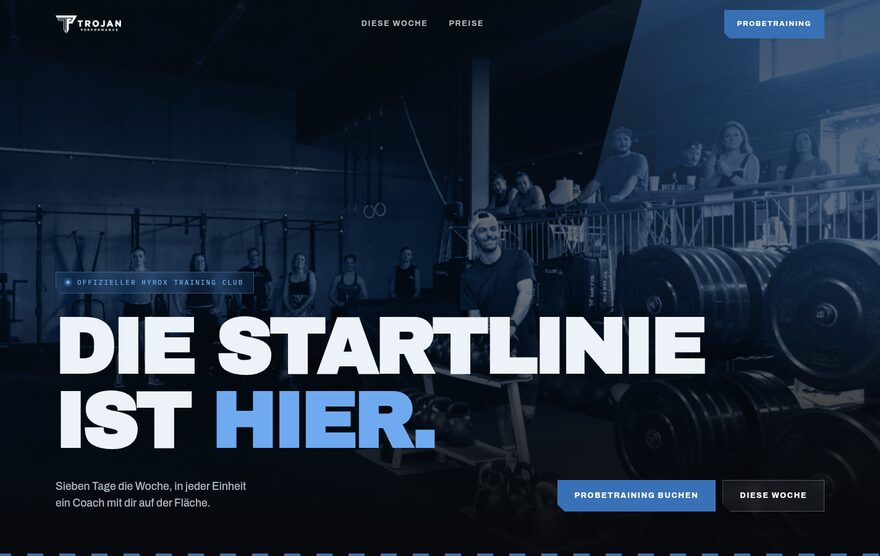
Kern
Arena auf 342 Wörter gekürzt, Gestaltung unverändert